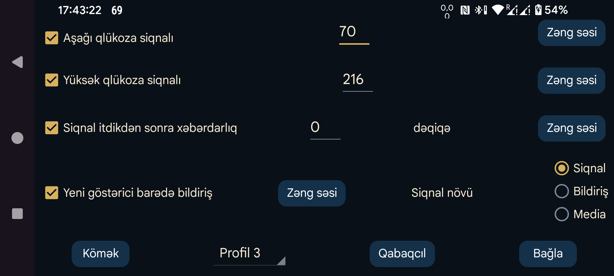

Bluetooth vasitəsilə alınan Axın göstəricilərindən qlükozanın aşağı və yüksək səviyyələri üçün siqnal yaratmaq məqsədilə istifadə etmək olar.
Qlükoza göstəricisi bu həddə bərabər olduqda və ya ondan aşağı düşdükdə siqnal verilir.
Qlükoza göstəricisi bu həddə bərabər olduqda və ya onu keçdikdə siqnal verilir.
Bluetooth vasitəsilə qlükoza göstəricisi alınmadıqda neçə dəqiqədən sonra siqnal verilməli olduğunu göstərin.
Aşağıdakı hallardan biri baş verdikdə siqnal dayandırılır:
Bəzən sensor müvəqqəti olaraq işləməyi dayandırır. Bu seçim aktivdirsə, sensor yenidən işləyəndə bildiriş alırsınız, amma yalnız Juggluco-nu açıb göstəricinin olmadığını özünüz gördükdən sonra. Məlumat boşluğunu yalnız Juggluco bildirişində və ya saat üzündə görmüsünüzsə, «Yeni göstərici barədə bildiriş» bildirişi verilməyəcək.
Hər siqnal üçün hansı siqnal səsinin çalınacağını və onun neçə saniyə davam edəcəyini ayrıca seçmək olar.
Siqnal seçildikdə zəng səsi aşağı və yüksək qlükoza, eləcə də siqnal itkisi üçün seçilmiş səs Android-in Siqnal səs kateqoriyasında çalınır. Onun səviyyəsi Android-də siqnal səsinin sürgüsü ilə idarə edilir; telefon səssiz və ya titrəmə rejimində olduqda da susdurulmur. Bildiriş seçildikdə telefonda bildirişlərin səs səviyyəsi, Samsung Galaxy Watch 4–7 saatlarında isə sistem səs səviyyəsi tətbiq olunur. Göstəricinin yenidən mövcud olması bildirişində həmişə bu kateqoriyadan istifadə edilir.
Media seçildikdə media səsinin səviyyəsi istifadə olunur. Əksər telefonlarda media səsi Narahat etməyin rejimində də eşidilir; lakin qulaqlıq qoşulubsa, səs qulaqlığa yönləndirilir. Siqnal kateqoriyasında səs həm qulaqlıqdan, həm də telefonun dinamikindən eşidilir. Bildiriş kateqoriyasındakı səslər Narahat etməyin rejimində eşidilmir.
Bu tənzimləmələrin hansı profilə aid olduğunu seçin. Beləliklə, siqnal və səsləndirmə tənzimləmələri dəstləri arasında keçid edə bilərsiniz. Profilin günün müəyyən saatında avtomatik aktivləşməsini Qabaqcıl → Cədvəllər bölməsində planlaşdıra bilərsiniz.
Əlavə siqnalların tənzimləmələri: çox aşağı, çox yüksək, tezliklə aşağı və tezliklə yüksək qlükoza. Buradan profillərin müəyyən vaxtlarda avtomatik aktivləşməsini də planlaşdıra bilərsiniz.